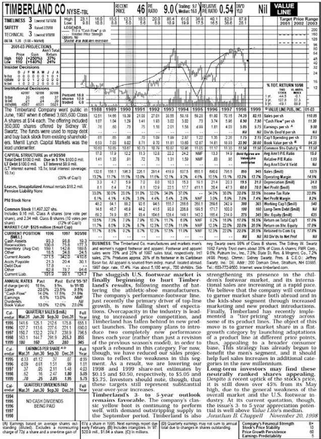
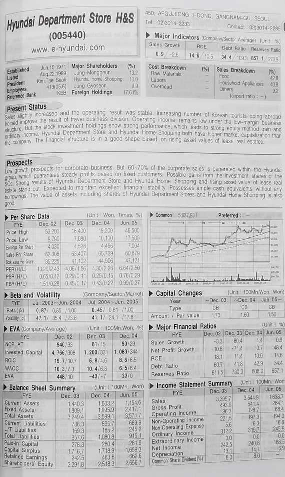
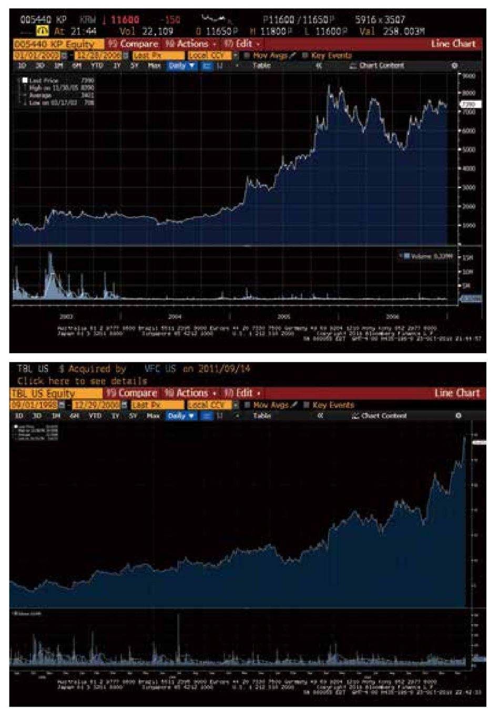

能再次回到这个课堂感觉棒极了，当年布鲁斯教授的这门课很大程度上塑造了我的职业生涯。大约15年前，那时候我其实还不是商学院的学生，一次很偶然的机会，我参加了一个讲座。这个讲座也是布鲁斯这门课的一部分，讲座的主讲人是沃伦·巴菲特（Warren Buffett）先生，当时我觉得巴菲特（Buffett）这个名字很有意思，让我联想到自助餐（buffet）。听沃伦讲到一半时，我忽觉醍醐灌顶，意识到也许自己能在投资领域里做点事。其实我当时的状态非常绝望，刚从中国到异乡，举目无亲，毫无社会根基，没有什么钱，还背了一身债。说实话，我对自己该如何在美国生存下去都忧心忡忡。再者我也不是在资本主义文化中长大，所以沃伦讲到的那些投资理念和我当时所理解的股市相去甚远。思来想去，我越发觉得自己也许能在投资这一行有点作为。
我猜想在座各位既然来上这门课（我知道要选上这门课是很难的，至少我上学的时候是这样），应该多多少少是出于一种“自我选择”的机制，也就是说你们认为自己是价值投资者或是倾向于价值投资者。（我们做个简单的现场调查）在座各位中有多少人真正认为自己是价值投资者或者倾向于价值投资者？又有多少人确信自己以后会从事资产管理的工作？好，这两者的数量大致相当，想要做资产管理的人和认为自己倾向于价值投资的人大致一样多。那谁能告诉我，真正将价值投资者和其他人区分开的那一两个特性是什么？大家可以踊跃发言。
同学：价值投资者靠证券背后的生意来赚钱，而不是估值倍数的提升。
换句话说，你把自己看成是一个生意的所有人，你的财富增减和生意的业绩好坏同步。其他同学呢？
同学：安全边际。
对，你需要安全边际。
同学：长期视角。
对。我们大体总结了价值投资的三个基本点，这也是格雷厄姆在教学中总结的。第一，你不认为自己是在买卖一张纸（股票），而是真正持有其背后的生意；第二，你在投资时需要很大的安全边际；第三，理解格雷厄姆书中的“市场先生”（Mr. Market）。其实这三点都源自一个理念：假设自己是持有生意的一部分，而不是一张纸（股票）；正因为你只持有生意的一小部分，不能完全掌控，所以出于自我保护，就需要很大的安全边际；正因为是生意的持有人，你就不会一天到晚想着交易，这就把你和市场中大部分参与者区别开来了。那么问题来了，假如我们真的认为自己拥有的是某个生意的一部分，为什么还需要股票市场？股票市场不是为我们这样的人设立的，对不对？股票市场的设立就是为了让大家尽量减小摩擦，可以随意进出，对不对？谁能谈谈对这个问题的看法？谁能告诉我，大概有多少资产是由价值投资者管理的，有谁愿意猜测一下吗？目前没有真正关于这方面的研究出现，但确实有一些尝试性的研究，据（商学院）隔壁法学院的路易斯·鲁文斯坦（Louis Lowenstein）教授估计，仅有5%不到的资产是被价值投资者持有的。这个结论与我们刚刚所说的是一致的，你们（价值投资者）确实不是大多数，而是极其稀缺的少数派，股市就不是为你们而设立的，它是为其他那些95%的人设立的；这正是你们的机会，也是你们的挑战。所以在进入资产管理行业前，把这些道理想透彻是极为重要的。这也是我在巴菲特的讲座中最先学到的，听讲的时候这些问题就萦绕在我脑海里，关于这些问题的思考让我找到了自己的位置，看清楚自己是什么样的人。对在座的绝大多数人来说（尤其是那些要进入资产管理行业的同学，我相信在座大部分同学都怀着这个想法），最大的挑战就是搞清楚自己到底是那5%的少数，还是95%的大多数。你可能以为，来上这门课，受到一些训练，就能成为5%，而一个人能发生改变的程度之大，往往令人惊叹。我在职业生涯初期也走过弯路，我一直自己管理基金，其中有段时间（布鲁斯刚才也提到了），朱利安·罗伯逊（Julian Robertson，老虎基金创始人）邀请我跟他共享办公室，还找来很多他投钱的基金管理人一起办公，交流投资想法，这段经历让我有机会更好地了解95%的人是怎么运作的。有意思的是，为什么95%的人不去做你们试图做的事情，更何况已经有了像巴菲特、芒格这样极其成功的先例，为什么？谁能解释一下？
同学：因为投资很难不受到感情的影响。
确实如此。不过历史已经给出了有力的证据，证明价值投资者在长期内能获得更大的收益，价值投资才是真正的金矿——为什么那些难以摆脱感情影响的投资人不去努力做出改变呢？还有其他原因吗？
同学：因为他们追求短期收益？
对，我们已经很接近事实了。我认为，诚实地来说，是因为资金就汇集在那里（短期交易的市场上），因为市场就是为这些热衷于交易的人设立的，自然地，这些人也只关注短期。只要你有金融需求，资产就会找到你。所以，即使统计结果显示5% 的价值投资者持续性拥有高得多的回报率，95% 左右的资金依旧会流向那些大多数。因为人类的本性会将大部分投资者诱导到（短期投资的）市场上。
所以我想强调的第一个也是最重要的观点就是，要想清楚你自己到底是什么样的人，因为在职业生涯中你会不断经受考验，所以不如尽早直面这个问题，搞清自己到底是不是价值投资者。好，现在我们假设你的个性适合成为一个价值投资者，这说明某种程度上，你属于人类进化过程中发生基因突变的那一小群。这一小群人有哪些特点呢？第一，你并不介意作为少数派，反而感到非常自在——这可不是人的本性，人类在进化过程中大部分时间是依靠群体才得以生存的，在几万年的进化过程中一直如此，所以群体性是根植在你的基因中的。但也有一小部分人拥有不同的基因（很可能是发生了基因突变），而他们也生存下来了。所以我认为（价值投资者的）首要特点就是乐于身为少数派，这是一种天生的感觉，对于事情的判断不受别人赞成或反对意见的影响，而纯粹基于你的逻辑和证据。其实这是常识。但正如一句话所说，“常识是最稀缺的商品”，大部分人不会这样思考问题。
第二，你愿意投入大量时间和精力去成为一个学术型的研究人员，而不是所谓的专业投资者。价值投资者要把自己培养成一个学术型的研究人员、侦探，甚至记者，要有探究万物运行原理的永不满足的好奇心。因为你认知越深，越有可能成为更好的投资者。所以你必须葆有对任何事物的兴趣和好奇心，这其中包括各行各业的生意、政治、科学、技术、人性、历史、诗歌、文学……基本上任何事物都可能影响到投资。当然，我不想吓坏你们（笑），你们不一定非要什么都去学，但我的意思是这种求知若渴的态度会让你受益匪浅。当你的学习积累到一定程度，也许会偶然地获得灵光一现的洞见——这种洞见就是知识赐予你的良机，而其他人根本无缘获得。其他那些人错失良机也可能是因为心理因素、思维的局限或是机构投资者的制度限制等等，而这些就是你的机会。当机会在我面前的时候，我会查验我的问题列表：价格是否便宜？这是不是一桩好生意？管理层是不是值得信任，这种信任是因为（相信）管理层是好人，还是基于充足的外部验证工作？我还遗漏了什么？为什么这个机会被我发现？假如完成这些检验后依旧觉得可以，那最后一步就是跨过心理的屏障，开始行动。
下面我们来聊几个投资的实例。虽然我不会谈现在的持仓，但可以谈谈过去持有的公司。我的公司创立于1997年的下半年，紧接着就遭遇了几个重大动荡，例如亚洲金融危机和科技股泡沫破灭等等。经历这段波折之后，我对机遇的嗅觉变得更为敏锐。1998年的秋天，我关注了一家公司。至于为什么我会发现这家公司，其实很简单，因为我一直对各行各业的公司都很感兴趣。当年我还在这里念书的时候，就痴迷于阅读《价值线》（Value Line），我对几乎所有事的来龙去脉都想追究。如果你想拥有百科全书式的知识和数据库，事实上如果你想成为价值投资者，这是必须的，我推荐你一页一页地阅读《价值线》，这是最好的商业训练，对你理解投资有巨大的帮助。我看《价值线》的时候，通常会先去看“历史新低名单”——股价新低、P/E新低、P/B新低等等，这比“历史新高”要更吸引我。
大家可以看一下手中资料（图12），要注意的是上面显示的46美元的股价是印刷错误，1998年8月到9月的时候，股价应该在28-30美元左右。大家看这个资料，你最先注意到的是什么？有人可以给出一个快速的总结吗？

作为价值投资者，你不应该关心公司过去的交易情况。我来告诉你们我会首先看什么。首先看估值，假如估值不合适，我就不会再继续，那么比较合适的估值意味着什么呢？
同学：P/B比较低。
那账面资产是什么呢，每次看破净股的时候你都需要问资产包里到底是什么，这些资产到底值多少钱？这很简单，只需要快速估算一下。运营资本是3亿左右，注意这是前三季度的业绩，根据常识不难想到零售行业通常第四季度是旺季，你回去看上一年四季度的情况就可以估算今年四季度的数据，估算出公司在四季度末会累积不少现金。公司3亿的账面资产，2.75亿的运营资本，其他的科目大致相抵，账上有1亿现金，1亿固定资产，再通过后续研究你会发现固定资产其实是一栋大楼，所以你3亿买下这家公司，得到了2亿的流动资产，其中1亿是地产，这是很不错的保护了，下行空间有限。
利润表和现金流量表呢？其中必须要重视的是息税前的利润，你需要还原没有债务杠杆条件下它的资本回报，这能让你看到这个生意的本质，它真正的营利能力是多少。大家快速地告诉我，息税前利润是多少？假如你是熟手，不用一秒钟就能看出来，公司的运营利润率大概是13%，8-8.5亿的收入，1-1.1亿息税前利润；那投入的资本呢？2亿流动资产，其中1亿固定资产，2亿的投入资本，1亿的利润，50%的资本回报率（ROCE）。所以这是桩不赖的生意。
其实不用多看其他的内容，你只需要5秒钟，就可以看出股票交易的市值在净资产附近，账面资产是干净的、保守的、有流动性的。1亿的运营资本加上1亿的固定资产，投入资本占市值的三分之二，2亿的运营资本产生了约1亿的息税前利润。所以这肯定是桩不赖的生意。
下一步你要考察的问题是，为什么会出现这样的情况？如果这是笔好生意，为什么人们不愿意去持有？
而且这个品牌很多人都知道，添柏岚（Timberland）是不错的品牌，什么原因导致它当时估值这么低？可能是因为亚洲金融危机，导致这些有亚洲业务的品牌都发生了下滑的情况，添柏岚的竞争对手诸如耐克、锐步等等都是如此。这时候你要去问问其他人是怎么想的，并不是说你要听取他们的建议，但是要知道他们的看法。看看有没有卖方报告，但奇怪的是并没有。一家销售近10亿，品牌也不错的大公司为什么没有人去研究？有什么合理的解释吗？
同学：可能公司对资本市场没有诉求。
很好。你可以去看公司过去10到15年的历史，看它过去有没有从资本市场融资的需求。你能从这些公司历史中看出什么端倪？公司在成长吗？盈利能力近年来有大幅提高吗？我们发现这家公司的盈利能力一直很不错，所以它对资本市场基本没有需求。还有其他原因吗？股东结构如何？
同学：是家族控股企业。
你说的家族企业是什么意思？他们控有40%股权，98%的投票权——你要对繁复的财务数据进行快速搜集和整理，我再强调一遍，投资者必须像调查记者一样，迅疾地思考和探究这些问题。其实这些问题的答案并不难找。所以说你必须有非常活跃的思维和好奇的头脑，永不满足于局部的片面的答案，才能在这个行业里做出成就。家族控制了这么多股权和几乎所有投票权，其他股东没有投票权，没有券商覆盖，同时又有很多不同的股东诉讼案件，假如你是那普通的95%投资者会得出什么结论？
（听完几个回答之后）你们的怀疑精神还不够！有没有可能是管理层挪用公司资金或者伪造账目？因为他们完全控制公司，几乎不受任何限制。然后联想到那些股东的诉讼案件，必定是事出有因，他们肯定是对某些事有所不满。那我们下一步做什么？去下载所有的诉讼资料，逐字逐行仔细研究。这就是为什么我要强调好奇心的驱动力，假如你只是想着赚钱，你很难去坚持深究。你必须要去探究每一个细枝末节。假设你们和我当时一样看完了所有的资料，你不难发现几乎所有的股东诉讼都围绕一个问题：过去公司一直提供相关盈利指引，但是现在不给了，这惹恼了一些股东，而公司被诉讼所扰，决定不再跟华尔街打交道，也不给什么指引了，所有者认为我根本不需要其他人一分一毫，我们的生意本身就很好了。好，那么这个疑团就解开了。
接下来的问题是，他们的确没有做假账，但他们作为公司管理层表现如何？他们是不是正直的人？你怎么去了解他们的为人？
同学：打电话给他的邻居。
好主意，你怎么跟邻居说？
同学：告诉他们真实的目的，问问他们的邻居他们是不是为人正直。
要是他们说“你见鬼去吧”怎么办？你是不是就放弃了？我可以告诉你们，大部分人真的会说“你见鬼去吧”。但这是一次好的尝试。再次强调，你就应该像调查记者一样，我一直把投资者看成是调查记者。凡是创立公司的人一般都有强烈的个性，都有历史可供考证，都会留下一些蛛丝马迹告诉大家他们是什么样的人，他们做过什么，他们如何应对纷繁复杂的情况。做这些调查工作并不难，而你必须密切关注这些细节。大部分投资者根本不认为这些是生意的一部分；但你是那5%（我希望你是，也许你压根不是），假如你真想成为这5%，你就该去做这些事：去这些人的社区、教会，拜访他们周围的人，把自己融入他们的家庭、朋友、邻居，光靠打电话是不够的，你要实地考察，甚至不惜花上几个星期的时间。这是非常值得的。尽可能地投入你的时间精力去找到他们，看看他们为社区邻里做了什么，朋友邻居怎么评价他们——这些能勾勒出一个人丰满的形象，而不仅仅是片面的性格评估；也去感受一下他们的家庭氛围，等等。我当时就做了这些事，发现这个老板只是高中毕业，没上过大学，是个简单的人，乐善好施，去教堂但不狂热。更有趣的是他有个儿子，上过商学院，年龄跟我相仿（当时30多岁），已经被内定要继任公司CEO，他和他父亲都是董事。同时我发现他也是另一家我朋友创建的公益组织（City Year）的董事，于是我就通过这位创始人朋友的关系也加入了这家组织的董事会，这段同在董事会的经历令我俩成为了好友。我也真切感受到他们父子俩是我认识的最值得尊敬的家庭之一，为人极其正直优秀，同时也是非常聪明的生意人。做完这些研究后，我发现股价仍在30美元上下徘徊。讲了这么多，大家觉得我还有什么遗漏吗？接下来你们会怎么做？
同学：买。
买多少，假设你有100元的话？
同学：40元。同学：200元。
你说什么？（笑）我很喜欢跟你们交流，因为你们还没有被过度影响。去了基金公司，你们会发现他们会用“基点”（Basis Point）来计算，他们会这么说，投资某某公司先来25个基点，好，不够就再多一点，来50个基点，这听起来是很大的投资啊，你看我们准备干50个基点，大手笔啊！这就是他们的风格。所以请一定要保持你们的纯真，你们现在的思维方式才是“常识”。想想看你们花了多少功夫才把这些细节拼凑起来，看清了事实的真相，这个机会是多么不容错失，几乎没有向下的风险，而且只有5倍的估值。接着我去了不同地区的很多家添柏岚店铺去搞清楚为什么这几年毛利率持续上升，结论是现在市中心贫民区的黑人孩子们把添柏岚当成了时尚，都想拥有一双添柏岚的鞋子和一条添柏岚的牛仔裤，那边的门店销售业绩很好，供不应求，店长都抱怨总是缺货。再看看国际业务这块，国际业务占到总比的27%，而鞋子的亚洲销售额在这27%中只占到10%，就算放弃这块业务，损失也很有限。所以我下重金买了很多添柏岚的股票。有人知道后面两年发生了什么吗？你们不是都能上网么，可以去查一下。千万不要人云亦云，别人说什么就听信了，你必须只做自己想做的事，你是对的不是因为别人同意你，而是因为你必须这么做，必须自己查证，这些事情用不了5分钟就能查证；如果不去查证，你就不是一个好的研究员。如果你做不成一个好的研究员，就永远不可能成为一个好的投资人。这些都是我的肺腑之言。你们必须训练这些技能，培养一种非常有效的组织、消化信息的能力。好，我来告诉你们发生了什么，接下来两年这家公司涨了7倍，更重要的是它的上涨与盈利增长是匹配的，所以这期间你没有冒什么大的风险。你并没有高位买入那些价格已经被哄抬过高的科技股。而添柏岚这个公司从未超过15倍（P/E）。但假设你在5倍买的，估值翻了3倍，盈利每年30%的增长，就变成了7倍。再到后来，新的CEO对于如何经营公司开始发生观念的转变，开始接待投资者了。要知道当年第一次和分析师的见面会只有三个人：CEO、我，再加一个分析员，到了2000年那次来了五六十个人，会议室爆满，主要的券商也都开始关注这家公司。那时我知道是时候卖出了。
布鲁斯：你担心（添柏岚）1994-1996年的事情重演吗？
我确实担心。那段时间正是股东诉讼案件冒出来的时候。他们的确在产品（的市场营销方面）走错了一步。添柏岚公司的声誉主要源于鞋子“防水”的概念，他们是这个行业里第一个开始推广防水概念的，但他们在市场营销中犯了错误，混淆了防水和不防水的鞋子，误导市场，混淆产品的性能，也令公司本身受损。但即使在这种情况下，那几年的收入也依然在增长，只有一年是例外，下滑，但可以说大部分时候他们经营生意的方式还是很聪明的。
买得便宜是王道，买了之后就尽量长期持有，不要做傻事，因为好生意会自己照顾好自己，你的财富会随着生意的发展而增长。
同学：这个投资你花了多少时间？
实际上不超过几个星期，听起来没有想象中那么久，但当机会出现时你需要夜以继日地全身心投入。所以我很高兴今天我太太来了，我总算有机会向我太太解释那些消失的夜晚我干嘛去了（笑）。这样的机会不会经常出现，当它到来时，你必须抓紧它，尽你所能把事情做周全，而且要尽可能地快，这就是为什么你要坚持训练自己的专业素养。平常没机会的时候把钱放在银行，什么也不买，这都没问题，但当机会出现时，你必须跳起来扑上去集中研究——我就是这样做的。当你做完所有工作，会发现可能甚至不需要（几个星期）这么长时间，但这是经过短时间内集中、高强度的调查研究后，做出的投资决策。
同学：读《手册》（Manual）的动机是什么？
我喜欢读 《穆迪手册》（Moody’s Manual）是因为它读起来很有乐趣。不是说去读就一定能找到机会，但我边读边学，我对各行各业的生意都很好奇。读得多了你就能闻到机会的味道。怎么培养这种敏锐的嗅觉呢，我觉得只能通过大量阅读，每一页都不放过。《价值线》非常棒，它从多个资源收集数据资料，并涵盖多年，这是你们了解各种生意最简单的途径。
同学：你投资添柏岚的时候，用了多少比例？
具体比例还是保密，但是我确实买了不少。
下一个案例是比较近的，发生在一年到一年半之前，它来自我手上这本书。所有的券商都有基于各个国家的证券手册，标准普尔也有，当然对于美国公司我更喜欢用《价值线》，它提供了更实用的信息。当我一页一页翻看这本书的时候，有一页引起了我的注意，就是你们手中的复印资料（图13）。你们从中看到了什么？
同学：便宜。
你说的便宜是什么意思？
同学：每股收益。
假如你真的把自己看成企业的所有者，就不会用所谓的每股收益这种概念，你要时时刻刻训练自己不去用“每股”这个概念来思考问题，要想着你是企业所有者。市值是多少？（一段时间的沉默，要转换汇率）加油啊！这很简单，我以为你们都做了家庭作业，做了的举个手。只有一个人？那你们怎么能在这个行当里立足啊！约翰（此同学举手了），市值是多少？（此同学沉默，全场哄笑）这很简单啊。市值是多少？（有同学回答说8700万）8700万？12一股，550万股，是多少？（有同学掏出了计算器）不要用计算器！你要习惯用自己的大脑！你要是想看很多公司的信息，这一本书有几千页，你留给每页的时间不能超过5分钟，所以你只能靠自己的大脑来思考，迅速浏览完一遍后就能大致知道公司的财务情况。

告诉我结果。6500万啊，差几百万没有大碍。去年的利润呢？（同学们长时间的沉默）给我税前的数据。加油啊，你们可是哥伦比亚大学商学院的学生，你们是精英啊！你们可是奔着15万美金底薪去的！（有同学报了个数）什么？给我税前利润？你往上看几行啊。净利润呢？税前3100万，市值6000万，两倍的估值。那运营资本呢？净资产呢？加油啊，（长时间的沉默）加油，你们这样可不行。布鲁斯，不知道你教了他们什么……
加油啊，是2.36亿啊，2.3亿净资产，6000万市值，2500万净利润，3100万税前利润。资产的具体组成是什么？（长时间的沉默）你们到底怎么做投资？这些都是基本功啊。作为一名分析员，如何快速计算这些数据？如果让你在5分钟之内告诉我这个公司的基本财务状况，你怎么做？（Chase同学回答了问题）就是这样，很简单啊。真正做生意的时候会用到什么？就是固定资产和运营资本，就这些。商誉（Good Will）不能算数。这些就是你运营生意的根基，你是企业的所有者，那么你拥有的就是这些，你应该扫一眼数据就能告诉我。要是做不到，那可能是布鲁斯没教好（笑），因为这是基本功。
现在我们有了这些基本数据，但它还没有给你全貌。市值6000万，3000万税前利润，7000万运营资本，1.8亿固定资产，一共2.4亿账面价值——这些数据能告诉你什么，接下来要做什么？（同学说去找出它便宜的原因）你怎么知道它便宜？我们觉得它可能便宜，但还不能下定论。接下来你必须搞清楚它的真实盈利情况，账上挂的资产到底是什么，运营资产实在不实在等等。我这里用的都是常识和最基本的逻辑，这些是你必须认真思考的。假如各位能这么思考和行动，证明你们还不错。这也就是为什么我要雇的分析员可能从来没上过商学院，没在公募基金、对冲基金就职过，有的甚至连会计课也没学过，但我发现训练他们更加容易。刚刚发生的情况也恰恰证明了我的这个想法。好，回到这家公司的财务数据，7000万流动资产，都可视为现金，6000万现金和1000万可交易证券。1.8亿固定资产，百分之百持有一家酒店挂账3000万，持有一家百货商店的13%也挂账3000万，恰巧这家百货商店也在这本书里，我看了一下发现其市值是6亿，那么13% 是8000万，也就意味着被低估了5000万。它还持有三家有线电视公司和一些其他物业。再看看这家百货公司，发现它的市值也接近现金和可交易证券的总和，2-3倍的P/E，持有很多不同种类的资产，他们还是第二大的有线电视运营商。接着我看到这个百货商店的运营模式跟酒店类似，跟我们这儿不一样，它没有存货，更像一个购物中心，他们靠从商场租客收入中抽成来营利。好，现在我们把整块拼图拼出来了，得出什么结论？你花6000万，换了7000万现金，没有任何债务，1亿股票，这有多少了，1.7亿，3000万的酒店已经10年没有重估了，而韩国地产在这段时间涨了很多。于是我去了韩国，考察了这家酒店，也造访了这家百货商店，它们看起来都很高档，位于中心位置。我找到周边的物业成交情况，所有信息都显示他们的真实价值是账面的三四倍，这就会增加1.5亿的资产值。现在多少了？3.2亿，这就是我花6000万换来的，此外还有每年3000万的利润。我漏了什么吗？（同学说公司治理）非常好。
大家讲了这么多，还没有人提到本土投资者的想法。（当你考察了之后）会发现有很多事情与你的想法不一致，也有很多事情在验证你的想法。你需要理性地把每个问题都仔细考虑一遍。本土投资者担心的问题，你也不能忽略，因为作为一个外国投资者你可能不理解某些事情。假如你把这些都过一遍（当然我们现在没有时间从头开始），你会得到跟我一样的结论，就是会大量买入。股票之后的情况呢？我这里有两张从彭博（Bloomberg）导的图（图14），一张是这个百货商店，从22涨到了100，另一个从12涨到70，都涨了五六倍。
总之，我给出这些例子是想告诉你们，这种研究方法并不是（大多数）投资者的本能，很可能也不是你的本能，但是如果出于某种原因你得出了跟我一样的结论，而你的性格又恰好遇上罕见的基因突变，那价值投资很可能就是你在寻找的事业，我唯一可以补充的就是告诉你（价值投资）确实可以赚到很多钱。这一套方法已经被不断验证了，从格雷厄姆到巴菲特再到后来者。我从心底里对这门课和布鲁斯非常感恩，多年前进入商学院上了这门课彻底改变了我的人生。我对你们的忠告就是要脚踏实地地去做事。说实话我今天有些失望，你们做得太少了。我上这门课的短短时期内就赚到了十几万美金，也就是听了14到15个人的讲座。但是我确实做了很多具体的工作。我告诉你们，假如你全身心投入，可以赚很多钱，不要只是听听就算了，去真刀真枪地干。你们现在上这课要花多少钱，商学院学费多少钱？（7万美金）总共7万？你们至少要把这些钱赚回来吧，更何况你牺牲了两年工作时间，也要把这些钱赚回来啊。怎么赚？我刚才说的就是最好的方法。所以我最后想强调的一点就是，我回来讲课唯一的原因（抱歉我不会谈我现在的持仓，刚才说到的两只股票我都已经卖出了），是我念商学院的时候，那些来讲课的人都会谈他们当时的持仓，认真听讲之后我会切实研究并做出投资决定，我从中受益匪浅。不做是没用的。那是10-15年前了，我赚了几十万，其中一个公司我就赚了10多万，那时候学费还低一些，具体多少忘了，但肯定比7万低。教授讲的都是实际的案例啊（就是实实在在教你怎么赚钱）。这也是这门课的独特之处，这里没有不切实际的理论，谈的都是已经被证明可行的东西；如果老师没提到，你们就应该问，他们也应该不吝赐教。各位已经在很高的起点上了（能坐在布鲁斯的课堂里），前面有无数闪光的机会，要是你们没抓住这些机会和利用好已有的资源，我会为你们感到羞愧，你们必须去好好学习和实践。书中自有黄金屋，这几本小书、《价值线》等等，你们都要好好利用啊。你们还这么年轻，充满精力，不要有所畏惧。

布鲁斯：你愿意再接受提问吗？
当然。
同学：你做研究时首要看的是什么？
假如你是分析员，我一直告诉我的分析员，我从你这里需要得到两样东西（当然你必须成为一个好的分析员，要不然你不可能成为一个好的投资者），准确的信息和完整的信息。绝大部分投资者的重大失败都是因为这两点做得不够。为了得到准确和完整的信息，你就要付出更多的精力和时间。你做不到这两点，你就无法在这行立足。因为绝大多数时候，你是寂寞的，你的判断和大多数人相悖。如果对自己知道的东西不自信，对自己（基于研究）的判断和预测不自信，当你看中的公司的股价一落千丈时，你不会有魄力去重金买入。看起来你是都赔光了，其他那些所谓的“聪明人”都在笑话你，但你就要有自信，这种自信背后的支柱就是准确和完整的信息。
第二点非常重要的是，绝大部分收益、你们一生中赚的大部分钱不会来自我们刚刚讨论的这类公司，这些投资只会给你点面包，让基本业务得以开展，给一个中规中矩的回报率，它不会给你一骑绝尘的超高回报率。就算这两个公司都涨了五六倍，也算不上是超高的回报率。假如你是真正的价值投资者，基本上会师从这两个学派：特威迪·布朗（Tweedy Browne）、本杰明·格雷厄姆（Benjamin Graham）是一派；另一派就是巴菲特和芒格。后者也是我更感兴趣的，你要是想走（巴菲特和芒格的）这条路，你的回报率会源自于几个洞见，而且数量绝不会多，两只手就能数得过来。你穷尽毕生努力50年，可能也就得到那么几个真正有分量的洞见。但你获得的这些洞见是独一无二的，其他人都没有的。这些洞见从何而来呢？只有一个途径：怀着无穷的好奇心、强烈的求知欲，去不断地学习、终生学习。你学习到的一切知识都是有用的。
布鲁斯：有同学问在你的研究过程中有什么特别的失误吗？
只要我违背价值投资三条原则的任意一条，就会犯错。当我获得的信息不够准确，或不够完整，我就会犯错；当我以为自己获得了洞见但其实压根就不是洞见的时候，就会犯错。我也犯过很多错误。基本上我不愿意沉浸在已经犯下的错误里，说实话可能我最大的错误就是看准了一家公司后没能买更多。另外一个错误就是事业初期走过的弯路。早年我刚成立公司后，业绩很出色，但却找不到客户投钱，每次交流，客户都无法理解，“我们要的是每个月甚至每星期都赚钱！我们要的是熊市也赚钱！这才是我们雇你的原因，我们要你像银行一样安全但是提供更高收益。你不是叫对冲基金吗？”我也是没办法。所以有那么两年，所幸不算长，我也开始搞对冲交易，搬到了朱利安·罗伯逊的办公室，开始学这些顶尖对冲基金经理的伎俩，也找了人来负责卖空。但其实你知道这套操作是毫无意义的，我自己也是忙得昏天黑地，因为卖空就必须交易，你没法选择，因为你的盈利上限就是卖空金额，而损失没有下限。搞到后面我都要精神崩溃了，没法专注于那些源自洞见的机会。正如查理说的，好像困住双手来参加踢屁股比赛，确实就是这样。那段时间我其实有几个绝佳的机会，是几家我了解很深的、具有自己独特洞见的公司，而且这些公司的管理层我还认识，这些公司的市值低于净现金，之后的市值增长了50100倍，而我与机会失之交臂。因为那时我无法全身心投入。真知灼见和频繁交易是互不相容的。这是我最大的错误，并不是说我少赚了多少钱，而是我错过了机会。我当然也会犯错误，而且不时会犯错误。常见的错误是，当你还没有彻底做完功课的时候，实在抗拒不了对这个想法的激动之情，像添柏岚，我在28美元时就忍不住先买了一些，但其实研究还没做完，只感觉大概率自己是对的。当然彻底做完研究后我又极大增加了购入额。也有可能研究完成后发现看错了，这时可能已经掉了20-30%，也没什么大碍，接受自己的误判，继续寻找新的机会。只要留足安全边际，赢的概率肯定很大，时间足够长之后你的收益不会差的。这种损失不算什么。但如果在一个你富有洞见的领域，机会出现时却不去下重注，这就是巨大的错误，我不能原谅自己犯这样的错误。（布鲁斯问能说出这些公司名字吗？）不能（全场笑），因为我以后可能还有机会投资它们。我向你们保证，你穷极一生可能也只会得到5个或10个洞见，要通过很多年的学习才可能产生一个。有些我今天在学习研究的东西，其实我早在15年前就开始学习了。我当时研究的是美国公司，现在发现了亚洲类似的公司，估值很好，处在我愿意下重注的位置。但你要知道，我15年前就开始研究这个领域了，对这个领域的所有知识都了如指掌。你就需要建立这样的洞见，才能对自己的判断坚信无疑。假如你做不到，有可能是个性不合适，也可能是努力不够，所以你没有机会真正赚取巨额财富。你可以学习格雷厄姆和特威迪·布朗，拿到年化10到15的收益率，这样的业绩已经超越了绝大部分（95%）投资者，包括那些所谓的专业投资者在内，但你不可能取得像巴菲特那样绝世独立的业绩。穷极一生也可能找不到这样的机会，让你的财富增长一千倍甚至一万倍的机会，不用想也知道这样的机会千载难逢，别想着你能轻易获取。它要求你能综合大量的因素，芒格把这种灵感命名为Lollapalooza效应，意识层面的、潜意识的、心理的、政治的……凡此种种综合起来、融会贯通后，才会灵光一现，让你成为唯一的洞见者，唯一有底气下重注的人。用完整、准确的信息加上独一无二的洞见来投资，这是真正吸引我进入这个行业的原因，它让人兴奋，而且是无比兴奋。你必须无所不学。我开始念书的时候学物理、数学，进入哥大后学习经济、历史、法律、政治等等，我对这些都很感兴趣。你们也需要这种热情。你们可能也需要一些生物学的知识和思维模式，我太太是一位生物学博士，我从她那儿学了很多生物学的知识，其中有一些也对我的投资起到了帮助，只是她可能不知道。你们必须无所不学，必须对一切事物充满好奇心，在这个长期的过程中，你偶然会遇到一个很大的机会，而这些大机会之间，你还会时不时抓到像添柏岚、现代百货公司（Hyundai Department Store H&S）这样的机会，获得不错的收益。
同学：你一年投资几个公司？
看情况了，这么统计可能没什么意义。有可能好几年都没碰到机会，也有那么几年机会层出不穷，这要看哪些公司在你的能力圈里而且估值也合适。但我能保证的是，机会不会均匀地出现，要保证每个季度或是每月有一个投资想法，这是不现实的，我的经历也不是这样。我15年前开始投资，那时还在哥大读书，五六年的时间内，我大概有三到四个比较大的投资想法，这些投资收益丰厚但是平均值没什么意义。之后我开始进步，投资学习这个过程是有积累效应的，你会发现自己的功力越来越炉火纯青，可能看一页《穆迪手册》只要几分钟，就能判断个大致。对机会的敏感度也是如此，所以越到后来也许能抓到的机会就越多；但也可能市场很不配合，一整年没出现机会，这都没关系。但我最不能接受的是虚度光阴，一年过去了什么也没学到，一个洞见（哪怕是自认为的洞见）也没产生，也没推翻过去错误的洞见。这是我不能接受的。所以你们一定要每一天不停歇地学习，把它当成一种思维上的纪律来执行。
同学：刚到美国时你怎么谋生？
我写了本书，赚了点钱，又有人出钱把书改编成剧本拍了电影。但我的净资产还是负的，因为我借了很多钱。好在我有一点现金。虽然资不抵债，但学生贷款不需要马上还，所以我很幸运可以有现金（用来投资）。
如何寻找投资的点子呢？其实我在读很多书的过程中都在寻找想法。我读名人传记，读物理，读我最喜欢的历史，都能带给我灵感，边阅读边寻找机会，如果有机会来了（例如刚刚提到的《穆迪手册》中有这么一家公司引起了我的注意），我就会全力以赴去研究。空余时间，主要是陪两个女儿，当然还有我太太。我的女儿一个三岁半一个一岁半，我也从她们身上学习，看看人的认知能力是怎么发展起来的。回到我投资时的思考历程：这桩生意便宜吗？是不是好生意？谁在运营？还有哪些是我遗漏的？当考察到最后一项时，你会发现心理学、人类认知领域的知识尤其重要。没有其他地方比孩子身上更能观察到人类发展认知的过程了。所以陪我两个女儿玩耍、观察她们的成长和认知发展对投资也有益处。所有知识都对投资有作用。
我想再强调一点。之前我提到，价值投资者和其他投资者不同的地方在于，把自己看成企业的所有人，注重长期，寻求安全边际，其实这三点都源自同一条：就是把自己看成企业的所有人。因为你是一个慎重的生意人，不能控制管理层，所以要保护自己，寻求很大的安全边际；既然是生意的持有人，自然会更注重长期表现，等等，其实都是一回事。有人会问我，你既然是生意的所有人，你干嘛还要买股票？股票市场就不是为生意持有人设立的，它是为了交易者设立的，吸引的就是交易者，这就是为什么那95%的人从来不会从这三点出发来思考和买卖。我们假设所有的投资者都是价值投资者（虽然由于人性的原因，现实中是不可能的），那还会有股市的存在吗？当然不会有了，谁会去买IPO？没有了一级市场（IPO）哪来二级市场？如果所有人都需要巨大的安全边际，谁还会卖给你？这也是我为什么开篇就讲这几个基本点，你们（假如是价值投资者）从本质上来说就不属于股票市场，你们必须时刻铭记这一点，找准自己的位置，不要被别人影响。再进一步假设，如果你真的天生是个生意人，那你迟早会被吸引，去成为成一个真正的生意人，运营一个企业。这也是为什么巴菲特离开了资产管理行当，芒格也离开了。他们搞了10多年的合伙人公司后，开始去收购企业，真正地运营企业。有这种思维的人也可能会去做私募。这其实是更实业的思维，是一种进化。拥有这种思维的价值投资者总能找到可获利的事情来做，即使市场不是为他们所设立，他们也总能找到赚钱的机会。原因在于，市场是为那95% 热爱交易的人设立的，这些人本质上就有弱点，他们总想着交易，一旦你热衷于交易，就必然会犯错。你的七情六欲私心杂念都会暴露出来，恐惧、贪婪这些本性也会导致你犯错。一旦他们犯错，市场波动，你们的机会就来了（当然前提是你们属于那5% 的价值投资者）。
同学：你怎么找到一个合适的卖出的时机？
这是一个非常有意思的问题，我自己在这个问题上也是逐步进化的。我曾经有一个原则，如果在某个价格我不打算买，我就可以卖。现在我觉得自己进化了一些，因为当我对某个领域、某家公司产生洞见的时候，我真觉得自己就是生意的所有人。即使有人说，你该卖了，价格已经很高了，而且这个价格确实我也不愿意再买了，但从长期（譬如10年）来看，我的洞见、对这家公司这个行业的深刻理解都告诉我，赢面还是很大，这个生意会越来越好，好生意就是会越来越好，这些生意的管理人拥有巨大的资本优势，在某些行业里，这是绝对的优势。所以这种时候我就有另一番考虑。首先，我要考虑卖了之后是否有机会再买回来；其次，还要交巨额的税金（资本利得税），这些应缴的税其实相当于你从政府那里拿的免息借款，只要不卖，这个免息杠杆就一直在，税率可能在30%，甚至高达40-50%，你可以用40-50%的免息资金增强你的投资，不会收到催款电话，也没有还款期限。假设企业善用手中的资本，他们回报可不止15%，我发现很多卓越企业的回报率高达50%-100%（ROIC），到了这一步，算数就变得更有意思了，你会发现增长的速度高出你的想象。所以说自信非常重要，而且你要有信心自己的判断和预测会在很长一段时间内都正确。我再强调一次，你一生可能也就只会遇到几次这样的机会，你自信你能看准到10年之后，已经很出色了。那些在投行工作的人以为可以预测无止境的未来——你觉得这可能吗？根本就是天方夜谭！大家都知道，他们连明天都无法预知，怎么可能预知未来5年、10年呢？还要预知永远？他们做的都是毫无意义的。但是我保证，如果你天资还不错，个性也合适，再加上努力，用一生来学习，也许在未来50年的投资生涯中你能找到5-10个机会，在这些机会中，你有自己独特的洞见，能比别人更准确地预知之后十几二十年的情况。到了这时候，你根本不会想卖。有什么理由要卖呢？政府免息借你钱，也不会把钱要回去，企业的年资本回报率（ROIC）高达40-100%，这在税务上是非常有效率的配置，所以你不会去卖。
同学：那为什么你卖掉了添柏岚？
因为它没有这些特征，它不在卓越的企业之列。我现在的组合里有一些公司是在这个行列中的，但我不会谈这些公司。
布鲁斯：你能概括一下这类卓越的公司的共同特征吗？
这些企业的竞争优势（不管它是通过何种途径建立起自己的优势）会不断增强、增强、再增强。大家可以试着找一些例子，你们花了那么多钱来上商学院，必须要建立起自己的思维框架，至少养成一种习惯，怎么来思考这些问题。是什么原因让一家公司比其他同行优秀那么多？竞争优势在哪里？为什么它们赚的钱越来越多？其他公司赚的钱却越来越少或者会经历起伏？原因是什么？你们需要研究那些已经建立起优势的企业来培养自己的鉴别能力。（有同学提及菲利普·莫里斯）将菲利普·莫里斯（Philip Morris）跟其他牌子区分开的本质原因是什么？（同学回答说这个牌子建立很早）这是一个好的因素，但不是我最喜欢的因素。（有同学说可口可乐，它将品牌和快乐建立起一种联系，李录摇头；Ebay，李录说是个不错的例子；还有同学说到某卡车公司等等。）
布鲁斯：你同意这些吗？还是不同意？
他们基本上都在复述巴菲特的持仓，我不同意也不行。但我希望大家说一些巴菲特还没有买的，一些你认为可能有潜力的公司。我不希望你们只从已经名载史册的投资者的经典案例中挑例子，能不能给我一个公司的名字，是他们没有买，但也有这些特征的，不在伯克希尔的组合里的？（有同学又说Ebay，李录说不错。另一同学提到通信塔，李录接着问为什么所有做无线通信塔的公司都倒闭了？）我在念书的时候买过的三只股票其中就有美国电塔（American Tower）。（同学们提了很多其他公司）怎么没有人提到大家每天研究中都在用的公司呢？（有同学提到价值线公司）不错。（有人说电脑）你确定电脑能赚钱吗？（有同学提到全球市场财智（Capital IQ））很好。我们来谈谈彭博（Bloomberg），在彭博之前有Bridge和路透（Reuters），为什么彭博最后胜出了？（同学说了很多原因，但最后有同学说到高的转换成本，学了彭博不愿意再学其他）举这个例子是因为你们会发现几乎所有行业都会面临类似的变化，这个案例分析是可以举一反三的。当你研究透了一个例子后，就能对其他行业的类似情况作出比较准确的预判。彭博的故事很典型，一个名不见经传的公司冒出来，尽管有很多前辈公司在行业中建立已久，但它就是这样一点点往前走，在某个节点发生了里程碑式的质变，最后成为了行业垄断者。现在你去哪找Bridge和路透？它们都消失了。正如刚刚这位同学说的，你花了很长时间学会这个很难学但是每天都要用到的工具（彭博），所以你不愿意再花时间去学别的工具。再加上你的同事、同行也在用彭博，你需要和他们沟通。所以在这个领域赢者通吃了。怎么得到这个结论才是真正有意思的。假设你有机会观察到这个行业早期发展的情况，假设你也确实观察到彭博发生质变的节点——可能是他们将平台推广到所有的商学院后，这样你们毕业了只会用彭博，不愿意再学其他。假设彭博上市，你有这样的洞见，那你就坐在金山上了。这就是我所说的洞见。你会不断发现类似彭博这样的公司，这种现象在很多行业都会发生。想想看为什么微软干掉了苹果，苹果曾经是行业的龙头老大，几乎占有百分之百的市场，而微软一点点地蚕食最后跨过了那道坎。当你在面临微软和苹果的选择时，你会发现其实你没什么选择，只能用微软，因为公司电脑的系统都是微软。现在你连不使用彭博的机会都没有，彭博有什么成本吗？没有，成本几乎为零！他们的成本大部分用来支付公司员工的高薪了。他们需要干什么？他们做研究吗？根本不做什么研究。他们只不过隔段时间（每个月）来你公司拜访一下，问问你有什么需求，每天工作中会用到什么。假如你是个喜欢交易的人，是那95%的投资者，就会对那些数字产生近乎迷信的狂热。彭博就专门为这些人开发了一套系统。你们知道彭博有多少公式？几万个！彭博会给你操作手册吗？当然不会！他们要把你一对一的绑住！给你一堆公式，然后问你收几十万。因为你每天都要用，而且在这一行好像每笔输赢都以几百万计，所以你不在乎30万一年的费用。哪怕彭博问你要几个点的抽成，你可能也毫无选择。他们会一直来找你，因为你就是个交易者，你每天都想要新消息和新功能，他们不断给你新的功能，其实就是给你带上一副枷锁，把你越绑越紧到绝望的地步。他们绝不会给你提供手册，也不会让你知道他们的成本；这真是印钞机啊，它用成本几乎为零的产品把你们每个人都绑得死死的，然后付给供应商的钱也少得可怜——因为供应商也别无选择。你们这些用户被它绑住了，还心甘情愿地给它提供反馈、帮助它改进，他们根本不需要做研究，问问你们有什么需求就好了。用户转换产品的成本如此之高，导致其他新产品完全不是它的对手，几十万从业者都被它绑架了，而且是一对一的绑架，其他产品怎么跟它竞争呢？现在假设你对这些情况非常了解，彭博上市了，你也观察到彭博发生质变的时间点，你会去投资彭博吗？我会的。这就是我所谓的洞见。你研究所有的生意，它们都难免上下起伏，但彭博的可预测度是很高的。其他行业里多少也会有这种可预见性。作为一个分析员，一个投资者，一个价值投资者，一个企业所有者，你们的工作就是坚持不懈地研究这些生意，观察它们的变化趋势，那么你一生中也许能发现几个类似的机会，这是一套实际可行的方法。我喜欢彭博，假如彭博要出售股份，其实它根本不要上市融资，为什么要融资呢？即使上市也会有很高的溢价，P/E一直高居30倍，而我不会因为短期内的高价而卖掉它，这就是我自己哲学的进化，从以前的“不愿买入就卖出”，发展到现在，会去长期持有一些公司，要是真能找到这样的公司，你没有必要卖。还有没有其他问题？
同学：投资后你会直接介入公司的运营和管理吗？
还是要看情况。我搞过很多早期创投，也曾经担任两家企业的董事会主席和许多企业的董事会成员，包括你们提到的全球市场财智（Capital IQ）。我是全球市场财智的第一个机构投资人，那时就只有创始人一个人。我们投资全球市场财智就是要效仿彭博的商业模式。在全球市场财智这个例子中我非常投入，开始时我是公司的最大外部股东，每天忙得焦头烂额，要知道我连一个帮我接电话的秘书都没有啊。我事必躬亲，但无奈实在是分身乏术，后来公司卖给了标普（S&P）。之后我又投了一个工程师领域的数据软件公司，希望把彭博的经验搬到工程师领域，结果也不错，任何高技能的领域都需要这类软件。你在一个领域获得的洞见是可以被借鉴到其他领域的。但总体来说，我是个求知欲很强的人，什么事都想去探究清楚，也非常愿意去和公司管理层成为朋友。例如添柏岚的老板在我卖掉他公司的股票后成了我基金的投资人，这种跟企业家的关系是我想要的。我觉得就得有这种大胆尝试、无所畏惧的精神。只有真正投身公司的日常运营，你才能从公司的每个决定中观察到行业发展的特征和发生质变的节点。没有任何事情是一成不变的，这也是投资有意思的地方。所以我们要不断地学习。比如彭博，也许多年后情况会发生变化，虽然我不知道具体什么原因会导致它巨变，但这是完全有可能的。我已经观察到其他行业的例子，像微软，它的处境就发生了变化，免费软件的兴起可能会完全改写行业的游戏规则。任何行业和公司都会发生变化，这是件好事，因为那些思维活跃的、时刻做好准备的人，一旦产生洞见就会看准时机行动，他们会在这些变化中创造巨大的财富。
[1] 美国哥伦比亚大学“价值投资实践”课程最早由本杰明·格雷厄姆开设，巴菲特可能是这门课最著名的学生。格雷厄姆退休后，这门课停了很多年，直到90年代初才由布鲁斯·格林伍德教授（Bruce Greenwald）重新开课。这门课程除了由教授讲课外，主要请十几位价值投资人以实例直接授课。巴菲特先生一直以来都会讲授中间的一课。从2000年初开始，我很荣幸几乎每年都会被邀请在这门课上做一次讲座，持续了十几年。很遗憾，大多数讲课的内容都没有留下记录。2006年这次是少数几次被同学以录像形式记录下来的讲座。国内价值投资爱好者蒋志刚先生热心翻译，并在网上传播。这里我做了少许修正，收录于本书。因为文章的内容是对讲课过程完整、真实的记录，包括和同学们的现场互动、问答，文中用语若有欠斟酌之处，还请各位读者见谅。